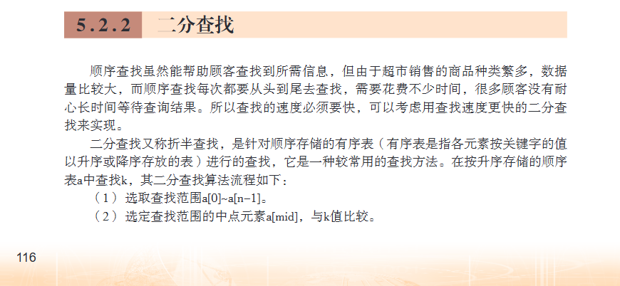
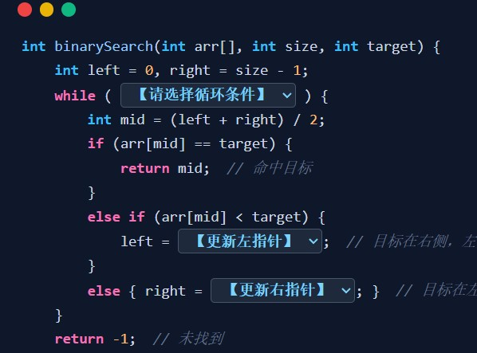
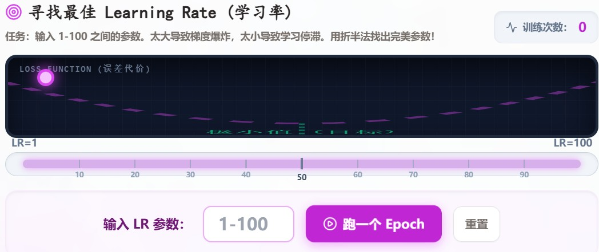
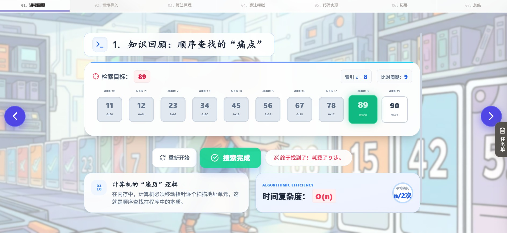
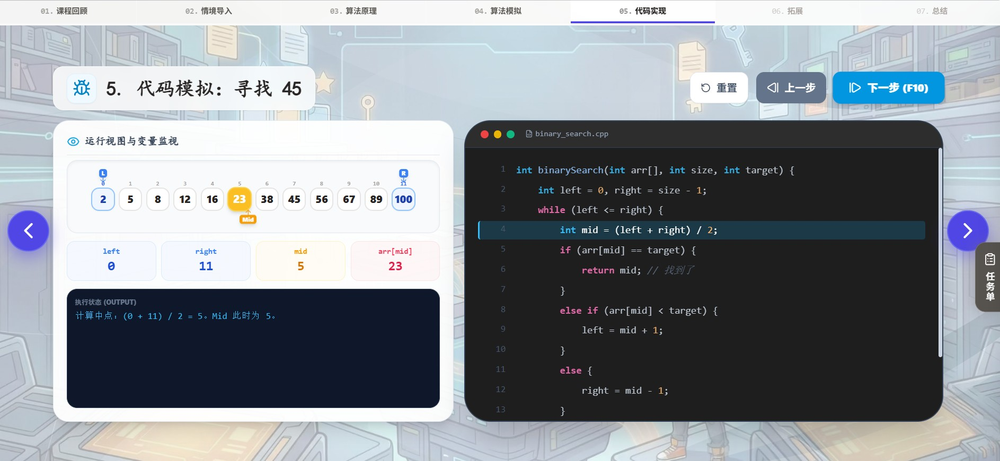
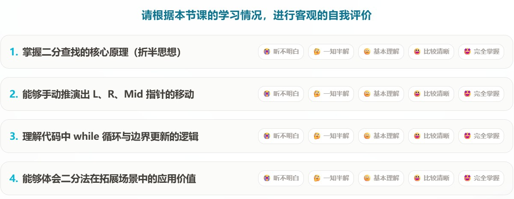
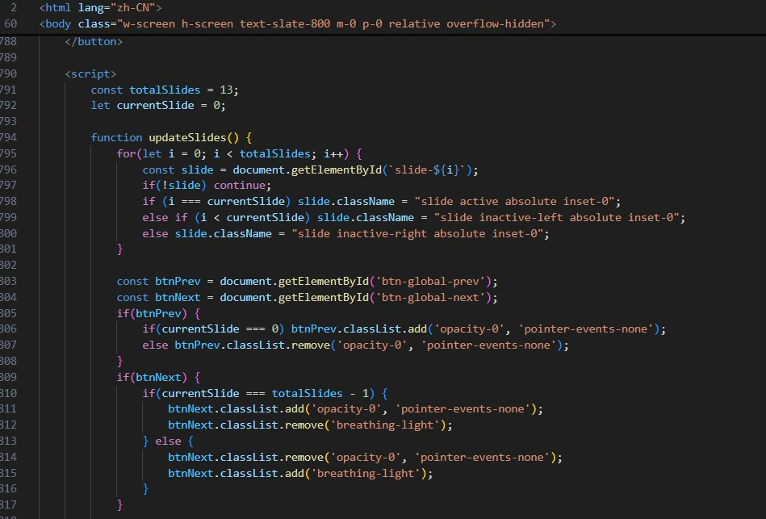

高效数据检索的逻辑与实现

本课选自粤教版选择性必修1《数据与数据结构》第五章。
已有认知基础：已掌握数组概念、循环结构，理解基本的迭代与递归思想，具备顺序查找的代码实现及初步逻辑推演能力。
认知盲区痛点：易忽略“有序”前提；难以跨越 O(n) 到 O(log n) 的量级壁垒；代码实现易在边界指针（L、R）更新上死循环。
最近发展区：生活化情境（光缆排障）唤醒常识直觉；可视化工具与 AI 数据对比提供视觉冲击，激发探索更优算法内驱力。
教学潜在风险：若理论推演不扎实直接切入代码，枯燥边界调试易引发畏难情绪，导致退化为“死记硬背”丧失计算思维培养。
掌握折半思想，准确推演
Left、
Right、
Mid
指针的动态变化规律。
理解
while (left <= right)
边界跳出条件，及
mid±1
更新逻辑，避免死循环。
设计“东莞至广州的光缆排障”情境。将抽象算法具象化为地理寻点，拉近知识与生活的距离，让学生凭借常识自然运用折半法。
用强烈的视觉动画与直观数据（如 14 亿数据查找对比），让学生切身感受 O(n) 与 O(log n) 的量级差异。
在代码环节，针对易错边界设置陷阱与报错。通过犯错与纠错，加深大脑对边界死循环难点的记忆。

课件右侧内置全局悬浮的“互动任务单”。引导学生变“听客”为“闯关者”，培养目标导向的自学与记录习惯。
在“AI调参模拟”等环节给予学生操作自由。培养学生将课本知识向未知领域横向泛化、举一反三的能力。

呈现一排盲盒，带领学生使用顺序查找的方式寻找目标数值（89）。注视着计步器缓慢逐一增加。
引入皮亚杰的认知失衡理论：人为刻意制造“痛点”，迫使学生主动去“顺应”并渴望掌握新的解题策略（二分查找），转化为驱动学习的最佳内生动力。

1. 光缆维修：体验折半排查。
2. 对数切割：推导公式 k = log₂n。
3. AI 对比：计算 42 亿数据的查找次数差异。
依据布鲁纳的“发现学习理论”：借助大模型工具具象化复杂度，引导学生自行探索发现时间复杂度降维的核心规律。
1. 手动接管指针：系统指令，学生手动计算并点击位置。
2. 修复搜索模块：下拉填空编译验证，排查陷阱。
遵循维果斯基的“支架式教学”：搭建“推演 ➡️ 逻辑 ➡️ 代码”的认知支架。在真实报错纠错中，自然消解死循环这个最高难度的痛点。

1. AI调参：在连续空间寻找最佳学习率。
2. 二分答案法：求教 AI 破解经典难题（放羊与柱子）。
贯彻“学习迁移理论”：强调核心规则抽象运用。引导学生跳出“数组找数字”思维，将原理泛化到连续解空间中，实现高级计算思维跃迁。
知识图谱填空、终极考题解锁、自我评价量表。送出寄语。
结合布卢姆“情感领域目标”，以寄语 “学会构建秩序，并懂得不断舍弃无效干扰，才是顶级智慧”，将理性的算法思想内化为人生哲学态度，实现既教书又育人的升华。


这不是翻页动画，而是真实的程序运转。利用前端技术构建真实的数据响应式组件。
自主开发带下拉排雷、震动报错反馈的微型IDE。让学生获得真实的沉浸式体验。
为课堂请来超级助教。利用AI解释数据极端对比，引导学生跨界解决拓展难题。
彻底终结“光看不练”的痛点，用代码逻辑保障“教学闭环”，实现讲练测实时统一。